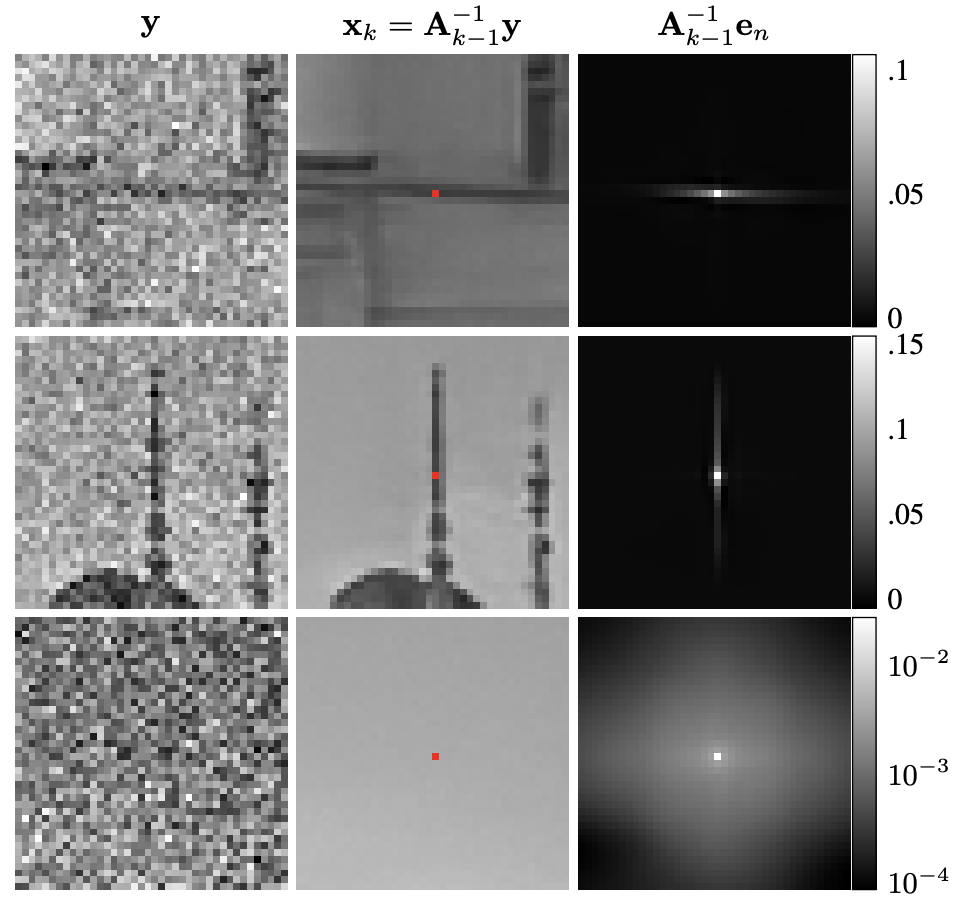

Abstract
DEAL is a novel and universal image reconstruction framework that combines the interpretability of classical methods with the power of deep learning. What I find most exciting is that the mapping from measurements to the reconstructed image remains highly interpretable: each output pixel is computed as an attentive average of the (adjoint of) the measurements, with weights that adapt to the spatial structure of the image.
Figure
Figure 8: Visualizing how each output pixel is a spatially adaptive weighted average of the input measurements.
BibTeX
@article{pourya2025dealing,
title={DEALing with Image Reconstruction: Deep Attentive Least Squares},
author={Pourya, Mehrsa and Kobler, Erich and Unser, Michael and Neumayer, Sebastian},
journal={arXiv preprint arXiv:2502.04079},
year={2025}
}